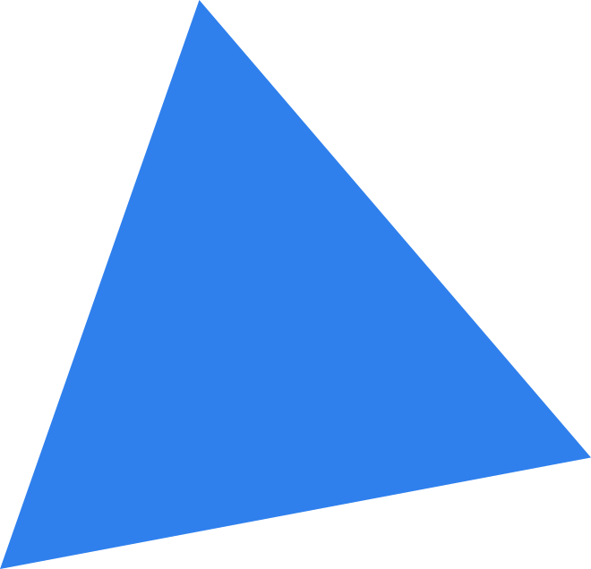

Masalah utama dengan pendidikan
Baik di sekolah maupun universitas, satu hal yang tidak pernah diajarkan kepada Anda adalah cara mengajar diri sendiri. Umumnya, kita hanya menghafal materi tertentu dan melatih diri untuk mengikuti tes sehingga dapat lulus pada tes tersebut pada waktunya. Namun, setelah ujian dan tes selesai, informasi yang Anda hafalkan tersebut seakan tidak lagi berguna, dan karenanya, tidak ada jaminan bahwa Anda akan tetap ingat hal-hal yang telah dipelajari di sekolah. Pada akhirnya, kita hanya belajar bagaimana cara untuk lulus ujian.
Ini adalah pertanyaan sesungguhnya: apakah dengan menghafal dan mengulang materi pelajaran, kita benar-benar dapat memahami inti materi yang kita pelajari? Menurut konsensus akademis terkini, jawabannya adalah tidak. Sebenarnya, alih-alih mempelajari suatu mata pelajaran, hal yang paling penting untuk dikuasai adalah cara belajar, namun sayangnya hal ini sering terabaikan. Jadi, apa yang bisa kita lakukan untuk memperbaiki hal ini?
Ada beberapa teknik dan latihan yang dapat Anda terapkan dalam proses pembelajaran agar prosesnya menjadi lebih efisien dan menarik. Terus gulir halaman ini untuk menemukan berbagai rahasia untuk belajar efektif.
Fakta dan angka
Tentang belajar dan otak
-
86 miliar
Jumlah neuron di otak manusia
-
73%
Persentase orang dewasa di AS yang menganggap diri mereka sebagai pembelajar seumur hidup
Pew Research Center -
1,000 terabita
Kapasitas penyimpanan informasi manusia
-
500 triliun
Jumlah sinapsis saraf yang bertanggung jawab untuk belajar pada manusia dewasa rata-rata
-
420 juta
Jumlah orang dewasa di bawah 25 tahun dengan pendidikan yang kurang memadai untuk mencari pekerjaan
Bank Dunia, 2017 -
26 tahun
Usia Albert Einstein saat ia menerbitkan makalah inovatifnya mengenai relativitas khusus
-
1885
Pengembangan teori forgetting curve
-
1897
Publikasi penelitian Ivan Pavlov tentang pengkondisian klasik

Teknik Feynman
Selengkapnya →Belajar tanpa lupa
Sepuluh prinsip mendapatkan keterampilan dengan cepat
oleh Josh Kaufman
-
1
Pilih suatu proyek yang menyenangkan
-
2
Konsentrasikan energi Anda pada satu keterampilan di satu waktu
-
3
Definisikan target tingkat kemampuan yang ingin Anda raih
-
4
Pecah kemampuan yang ingin Anda kuasai menjadi beberapa bagian
-
5
Dapatkan alat pendukung yang penting
-
6
Hilangkan penghalang untuk berlatih
-
7
Luangkan waktu untuk latihan
-
8
Ciptakan siklus umpan balik yang cepat
-
9
Berlatihlah dengan keras dalam rentang waktu yang singkat
-
10
Tekankan fokus pada kecepatan dan kuantitas